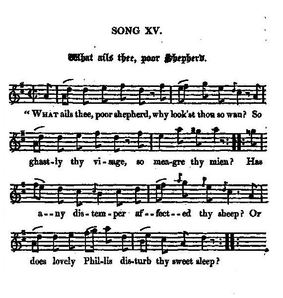
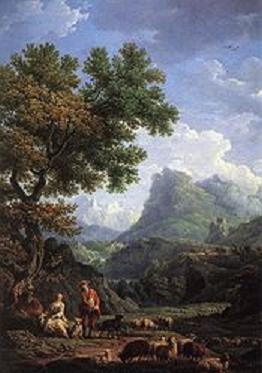

What ails thee, poor Shepherd?
Berger, dis-moi ta peine
Expecting the Pretender's Return
Tune - Mélodie"What ails thee, poor Shepherd?"
from Hogg's "Jacobite Relics" 2nd Series N°15, page 87
Sequenced by Christian Souchon

|
To the tune:
"This song was both in Mr Hardy's MSS. and in Mr Steuart's, jun. of Dalguise. Without the variation of a word, in the latter, it was said to have been written by Mr Gay ." Source "Jacobite Relics" Vol.2. |
A propos de la mélodie:
Ce chant se trouvait à la fois dans les manuscrits de M.Hardy et ceux de M. Steuart, cadet des Dalguise. Les deux textes sont identiques. L'auteur présumé est M. Gay. |

|
WHAT AILS THEE, POOR SHEPHERD?
1. " What ails thee, poor shepherd, why look'st thou so wan? So ghastly thy visage, so meagre thy mien? Has any distemper affected thy sleep? Or does lovely Phillis dis-turb thy sweet sleep ? 2. " That thou should'st sit here by the shades and complain: " What is't that perplexes or troubles thy brain ?" It was close by an elm where his pipe and crook lay, But his heart was so griev'd, not one tune he could play. 3. " Alas!" quoth the shepherd, " the theme of my song " Is, since our old landlord is o'er the seas gone, " Hogan Mogan has seiz'd and kept all for his own, " And from plenty to want our country is grown. 4. " Our rents they have rais'd, and our taxes increase, " And all is because we have ta'en a new lease. " So dull are my notes, on my pipe I can't play " The tune I was wont, since our landlord's away. 5. " Heaven bless our great master, and send him again, " Ere famine and poverty kill the poor swain ; " For the Dutch and the Germans our lands they do keep, " They fleece this poor nation as I fleece my sheep." 6. " Cheer up, honest shepherd, and calm thy griev'd heart; " Gird thy sword by thy side, act a true British part; " Gird thy sword by thy side, throw thy sheephook away, " For our landlord is coming, we'll clear him the way. 7. " See the glass how it sparkles with true English corn: " Here's his health, honest shepherd, and speedy return ; " And when he comes o'er he shall have all his own, " And with disgrace Hanover must yield up the crown." Source: "The Jacobite Relics of Scotland, being the Songs, Airs and Legends of the Adherents to the House of Stuart" collected by James Hogg, published in Edinburgh by William Blackwood in 1819. |
 |
BERGER, DIS-MOI TA PEINE
1. "Berger dis-moi ta peine, pourquoi cet air inquiet? Ton visage est si blême, tes traits sont creusés? Souffrirais-tu d'un mal qui t'empêcherait de dormir? La charmante Phillis hante-t-elle tes souvenirs? 2. Pourquoi cherches-tu l'ombre pour pousser des soupirs: Dis-moi ce qui te trouble, qui te fait pâtir?" Près d'un ormeau gisaient sa houlette et son chalumeau. Son cœur était trop lourd pour qu'il pense à jouer un morceau. 3. "Tel est", a dit le pâtre, "le thème de mon chant: Notre propriétaire loin sur l'océan A fui. Hogan Mogan alors a confisqué ses biens Nous, si riches naguère, à présent nous n'avons plus rien. 4. "Ils ont crû, nos fermages, tout comme nos impôts, Parce qu'on nous oblige à changer les baux. Les accents de ma flute sont si tristes. Je ne peux Jouer comme quand, sous l'ancien maître, j'étais heureux. 5. "Dieu bénisse ce maître et nous le rende encor, Avant que de famine nous ne soyons morts. Bataves et Germains tiennent nos vallées et nos monts. Ils tondent la nation, comme nous tondons nos moutons." 6. "Courage honnête pâtre et calme ton courroux; Tu dois ceindre ton sabre, rendre coup sur coup Comme ici c'est l'usage. Oublier un temps tes brebis. Notre maître revient: son chemin doit être aplani! 7. "Regarde la bouteille pleine de malt anglais! A son retour rapide! Et à sa santé! Et quand il reviendra, chacun recouvrera son bien; Et, tout piteux, Hanovre retournera chez les siens!" (Trad. Christian Souchon (c) 2010) |